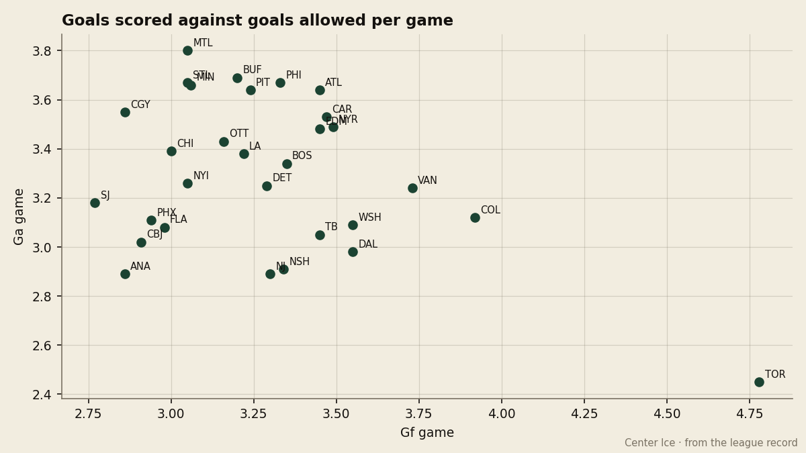
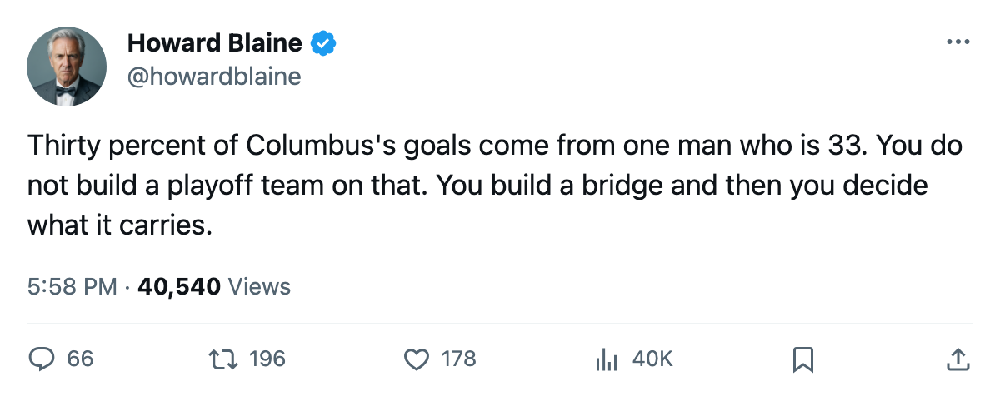
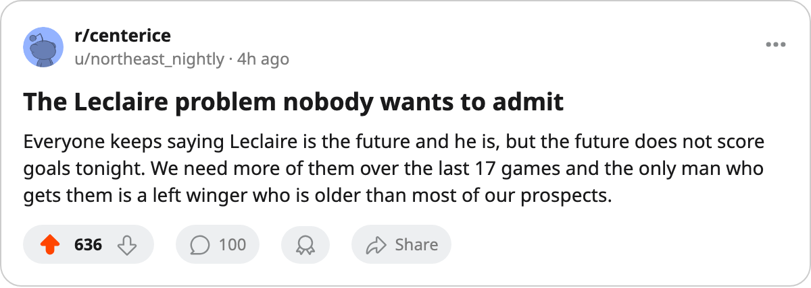

30.2 Percent: Columbus has a top-6 defense, a bottom-4 offense, and one 33-year-old making nearly a third of what little they score
The Blue Jackets are 4 points back of 8th in the West on a construction no other club in the league's top half matches
 Howard BlaineSenior writer, The Blaine Rankings · The Hockey Gazette
Howard BlaineSenior writer, The Blaine Rankings · The Hockey Gazette
 Columbus Blue Jackets scores 2.91 goals a game and allows 3.02. Those two numbers put them 4th-worst in the league at one end of the ice and 6th-fewest allowed at the other, and they sit 4 points back of the 8th seed in the Western Conference with 17 games left and 14 days to the trade deadline.
Columbus Blue Jackets scores 2.91 goals a game and allows 3.02. Those two numbers put them 4th-worst in the league at one end of the ice and 6th-fewest allowed at the other, and they sit 4 points back of the 8th seed in the Western Conference with 17 games left and 14 days to the trade deadline.
 Geoff Sanderson85 has 57 of those 189 goals. That is 30.2 percent of everything Columbus has scored this season, computed from the two figures on the sheet. He is 33 years old, in the second year of a $6.34M contract, and his 105 points rank 8th in the league.
Geoff Sanderson85 has 57 of those 189 goals. That is 30.2 percent of everything Columbus has scored this season, computed from the two figures on the sheet. He is 33 years old, in the second year of a $6.34M contract, and his 105 points rank 8th in the league.

The construction that does not work at the top
The fewest goals scored by any club at 80 points or more is  New Jersey Devils's 211. Columbus has 189. The closest club to their goal total that has reached 80 is
New Jersey Devils's 211. Columbus has 189. The closest club to their goal total that has reached 80 is  Mighty Ducks of Anaheim at 189 goals and 78 points, and Anaheim gets there on
Mighty Ducks of Anaheim at 189 goals and 78 points, and Anaheim gets there on  Jean-Sebastien Giguere97's 2.55 GAA and the highest goaltender grade in the league at 91. Columbus has
Jean-Sebastien Giguere97's 2.55 GAA and the highest goaltender grade in the league at 91. Columbus has  Pascal Leclaire88 at 2.66, and the arithmetic almost works if you stop at 6th-best defense. It does not work because the goal differential is minus-7 and the point total is 64.
Pascal Leclaire88 at 2.66, and the arithmetic almost works if you stop at 6th-best defense. It does not work because the goal differential is minus-7 and the point total is 64.
Compare the three clubs with a better defensive ranking than Columbus. New Jersey Devils allows 185 and scores 211, good for 89 points and 2nd in the East. Mighty Ducks of Anaheim allows 191 and scores 189, good for 78 points and 6th in the West.  Nashville Predators allows 186 and scores 214, good for 84 points and 1st in the Central. Each of those clubs scores at least 22 more goals than Columbus on a similar defensive foundation.
Nashville Predators allows 186 and scores 214, good for 84 points and 1st in the Central. Each of those clubs scores at least 22 more goals than Columbus on a similar defensive foundation.
| Club | GA | GA rank | GF | GF rank | Points |
|---|---|---|---|---|---|
| NJ | 185 | 2nd | 211 | 17th | 89 |
| NSH | 186 | 4th | 214 | 19th | 84 |
| ANA | 191 | 3rd | 189 | 3rd | 78 |
| CBJ | 196 | 6th | 189 | 4th | 64 |
What Sanderson carries
His pace projects to 132 points over 82 games. The Book has him at 83, one below his base grade of 87, with the Development Index reading +1. His speed is 91 and his accuracy 90; his fighting grade is 50 and his injury grade 50. At 33, with 22.0 minutes a night, he is the most productive player on a roster where the next-best option does not crack the league's top 30 in scoring.
The contract has 2 years left. The Development Index has him up one, not down, which says the Bureau's form term has not turned against him yet. But at 30.2 percent of the team's goal production, every remaining game leaves a thin margin. When Sanderson is held off the scoresheet, Columbus has roughly 70 percent of its usual output available, and that is not a team that wins hockey games against a top-6 defense.
Leclaire is not the problem and is not the solution
Pascal Leclaire, 22, has a 2.66 GAA in 41 games. The Bureau's Book has him at 86, the Development Index at +4, and potential at 93. He is 4th among goaltenders in goals-against average among those with 5 or more games, behind only Giguere, Brodeur and Vokoun. He is the reason this club allows 3.02 a night and not 3.30.
What Leclaire cannot do is score goals. He is the backstop on a structure that already accounts for most of what Columbus gets right, and the gap between his potential and Sanderson's current production frames the question about this club's future. The question at the deadline, 14 days away, is whether anyone hands Columbus a second option that moves the goal total from 189 toward the 214 that Nashville puts up on a similar defensive foundation. The club's $49.21M payroll sits in the middle of the league, and their per-point cost of $0.77M is efficient spending on a losing construction.
The arithmetic of 17 games
 Phoenix Coyotes holds 8th with 68 points and 18 games remaining, riding a 7-game win streak as of the last edition. Columbus has 17 games left. To tie the Coyotes, Columbus must outpace them by 4 points over the stretch. Phoenix's 7-game run was built on minus-11 goal hockey; that number does not sustain itself, and the 8th spot looked like it might shift as recently as March 4. But a 4-point deficit with one fewer game remaining and a single 33-year-old carrying a third of the offense does not erase 4 points.
Phoenix Coyotes holds 8th with 68 points and 18 games remaining, riding a 7-game win streak as of the last edition. Columbus has 17 games left. To tie the Coyotes, Columbus must outpace them by 4 points over the stretch. Phoenix's 7-game run was built on minus-11 goal hockey; that number does not sustain itself, and the 8th spot looked like it might shift as recently as March 4. But a 4-point deficit with one fewer game remaining and a single 33-year-old carrying a third of the offense does not erase 4 points.
The desk's call: Columbus finishes 6 or more points behind 8th in the Western Conference.

